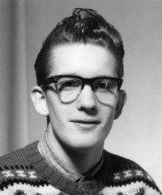

Lovise og Håkon Wahl sin slekt
Personside 1
Steinar Wahl
Foreldre
| Far | Haldor Haldorsen Wahl (f. 15 juli 1893, d. 21 januar 1975) |
| Mor | Sigrid Olsdatter Volden (f. 22 oktober 1903, d. 1 mars 1965) |
| Pedigree Link |
Familie 1: Jenny Hansen (f. 1 mai 1925, d. 17 oktober 1988)
| Sønn | Håkon Wahl+ |
Familie 2: Kirsten Annie Ramfjord
| Sønn | Ivar Wahl+ |
| Datter | Birgit Elisabeth Wahl+ |
| Datter | Liv Kristin Wahl+ |

Biografi
Han døde av kreft, kl 0628 den 9 juli 2004 på/i Nærøy bo- og behandlingssenter, Kolvereid, Nærøy, Nord-Trøndelag. Han ble gravlagt den 15 juli 2004 på/i Lundring kirke, Nærøy, Nord-Trøndelag+. | Sist redigert | 20 august 2024 20:32:37 |
| Slektskap | Far til Håkon Wahl |
Jenny Hansen
Foreldre
| Far | Håkon Hansen (f. 22 mai 1894, d. 28 oktober 1967) |
| Mor | Dagny Sedorie Laugen (f. 23 mars 1900, d. 10 februar 1981) |
| Pedigree Link |
Familie 1: Steinar Wahl (f. 12 august 1928, d. 9 juli 2004)
| Sønn | Håkon Wahl+ |
Familie 2: Karl Tvedt (f. 2 oktober 1910, d. 25 desember 1980)
| Sønn | Torvald Vidar Tvedt (f. 23 januar 1949, d. 16 desember 2013) |
| Datter | Dagny Margrethe Tvedt+ |
| Sønn | Karstein Johan Tvedt+ |
| Datter | Aasa Eliette Tvedt+ |
| Datter | Astrid Ragna Tvedt+ |
| Datter | Randi Jofrid Tvedt+ |
| Sønn | Hjalmar Olav Tvedt (f. 29 juni 1957, d. 31 januar 2021) |
Biografi
Hun hadde vært mye syk - hatt sukkersyke - høyt blodtrykk - forstørret hjerte - leddgikt og gjennom de siste årene mange hjerneblødninger. Hun ble gravlagt den 21 oktober 1988 på/i Myking kirke, Lindås, Hordaland.
Etter at Jenny ble gravid, reiste hun fra Nærøy sammen med en venninne. Hun tjenestegjorde en stund i OppStryn. Her begynte nedkomsten å melde seg, og reisen gikk videre til Bergen.
Jenny hadde brunt hår og blå øyne og målte 1,63. Hun hadde anlegg for å legge på seg, og veide på det meste over 90 kilo. Dette til tross for at det ble rikelig med mosjon. Fra Fjellsbø var det langt å gå når ærender skulle utføres. En mil til handelsmannen og ofte måtte både tur og retur tilbakelegges til fots. I alle fall var de siste tre kilometrene fra bilvei ikke fremkommelig annet enn til fots. En barnefødsel nesten hvert år bidro også til vektøkningen.
På gården var det mer enn nok å henge fingrene i. Foruten å måtte delta i gårdsarbeide som ofte var svært tung siden alt foregikk manuelt, var fjøsstell stort sett husmorens oppgave. Av husarbeide var det heller ikke mangel på oppgaver etter hvert som åtte barn forlangte sitt. Jenny bearbeidet mange av gårdens produkter gjennom hele produksjonsprosessen. Av slakt ble all innmat og blod benyttet. Ull ble kardet og spunnet, farget etter koking av mose og gensere, sokker og votter strikket. Ellers ble klær sydd om og kjoler og matrosdresser kunne være ferdige til 17de mai.
Når Jenny utførte noe, skulle det gå fort unna. Hun ble lett irritert over andre som syntes å ha mere enn to tommeltotter. Hun imponerte de fleste med den farten hun hadde på rokken.
Selv om hun fort opparbeidet seg en stor bekjentskapskrets og fikk mange venninner, var det ikke alltid lett å være innflytter i en liten bygd. Og særlig i dette tilfellet, en trønder med lausunge som kommer til strilelandet. Motforestillingene mot trøndere var enda på den tiden sterke, og sikkert tilsvarende om vestlendinger i Trøndelag. Mange forbandt trøndere med samer og det var ikke langt unna at noen kunne mistenke henne for å kunne kunsten å ganne. Hun og Karl Tvedt forpaktet mellom 1960 og 1961 på/i Øksninga 19/2, Kolvereid, Nærøy, Nord-Trøndelag.. Gården tilhørte Sverre og Astrid Gansmo. Astrid var tante til Jenny. Hun og Karl Tvedt kjøpte den 22 juni 1961 på/i Dalmo 1/1, Torstad, Nærøy, Nord-Trøndelag. Kjøpesum 5.000 kroner. Et småbruk som ligger langs kysten nordover langs leia fra Rørvik. Nærmeste tettsted er Ottersøy.
De flyttet omkring månedsskiftet november/desember 1968 tilbake til Vestlandet og bosatte seg på Myking, Lindås.
| Sist redigert | 19 august 2024 17:48:42 |
| Slektskap | Mor til Håkon Wahl |
Karl Tvedt
Foreldre
| Far | Tobias Martin Tvedt (f. 13 desember 1875, d. 17 juli 1949) |
| Mor | Matilde Ragnhild Rasmusdatter Haugsvær (f. 18 juli 1874, d. 28 juni 1963) |
| Pedigree Link |
Familie: Jenny Hansen (f. 1 mai 1925, d. 17 oktober 1988)
| Sønn | Torvald Vidar Tvedt (f. 23 januar 1949, d. 16 desember 2013) |
| Datter | Dagny Margrethe Tvedt+ |
| Sønn | Karstein Johan Tvedt+ |
| Datter | Aasa Eliette Tvedt+ |
| Datter | Astrid Ragna Tvedt+ |
| Datter | Randi Jofrid Tvedt+ |
| Sønn | Hjalmar Olav Tvedt (f. 29 juni 1957, d. 31 januar 2021) |
Biografi
Hans første jobb utenfor hjemmet var som geitegjeter (geitejesus som slike den gang ble kalt) i Modalen. Han hadde ansvar for omkring 200 geiter. Til kvelden skulle geitene samles ved sæteren hvor budeia sto for melkingen og den påfølgende ystingen.
Karl var mørk og 1,75 høy. Han var usedvanlig sterk, noe som kom godt med på en fjellgård både i det daglige arbeidet på gården og når noe skulle bæres til eller fra bygda. Ellers var han netthendt og alt han laget skulle være forseggjort. Som så mange i familien var han musikalsk, og spilte både hardingfele og trekkspill. Han bygde også noen hardingfeler. Han overtok den 19 september 1950 Fjellsbø søre 49/1, Fjellsbø, Lindås, Hordaland. - "skøyte frå Skifteretten etter Tobias Hansson og attlevande enkja Mathilda sitt sams bu til son og arving Karl Tvedt for kr. 2.500,-.".
Gamal Landskyld på garden var 1/2 laup smør (7,7 kg), 1/2 tunne malt (ca. 81 l). Første gong ein finn Søre Fjellsbø nemd er i 1563. Brukarane var sjøleigarar og i eigarlista i 1624 er garden oppførd som bondegods. I 1684 er Søre Fjellsbø kome over på framande hender, og Hans Lillenskjold er oppførd som eigar. Av seinare eigarar kan en nemna Lars Tveiten, Alversund. I 1772 høyrer garden til "Hans Kongelege Magistrat". Grunnen til at han er komen i offentleg eige er vel at landskatten ikke er vorten betalt og det har vorte teken pant i eigendomen. Av eit skøyte frå Hans Majestæt Kongen av 17/7-1793 ser me at skylda på garden er sett ned frå 1 laup smør (24 merker) til 9 merker. Det er Knut Andersson Førland, Austrheim, som då er kjøpar, men året etter sel han garden til Sjur Olson som i det høve får låna 46 rdl. hjå madam Tornebye i Bergen mot obligasjon i garden.
Bruk:
1. 1563 Oluf bet. 2 lott sølv.
2. 1624 Antonis.
3. 1645 Ivar Pederson
4. 1664 Tomas f. 1615
5. Knut A. Førland
6. Sjur Olson
7. Jon Olson Grane fra Voss, f. 1766
8. Jakob Olson Horvei, f. 1771
9. Ola Jakobson Fjellsbø, f. 1812
10. Halvor Nilsson Hopland, f. 1857
11. Knut Kikall, f. 1850
12. Ananias Andersson Veland, f. 1875
13. Tobias Tvedt
14. Karl Tvedt
15. Malvin Tvedt
Karl fortsatte det arbeidet tidligere generasjoner hadde lagt ned på gården med å grøfte og dyrke der det var mulig. Eiendommen var på omkring 100 mål innmark, men kun omkring 40 mål var egnet til gressdyrking.
Gjennom de fleste år på Fjellsbø ble kugjødsel dratt ut på slede eller vogn for hånd. Da måtte Jenny og også barna etter hvert som de voks til, stille opp og skyve så godt de formådde. Tørrhøy ble båret hjem på ryggen.
Det ble etter hvert anskaffet hest på gården, men det var ikke mange steder det var så flatt og jevnt at slåmaskin kunne benyttes. Fra de mest brattlendte områdene ble tørrhøyet kjørt hjem på slede, fordi vogn med hjul ville trille rundt.
Besetningen på gården ble etter hvert hest, fire melkekuer og et par ungdyr, noen sauer og fra tid til annen en gris. Han og Karl Tvedt og Jenny Hansen forpaktet mellom 1960 og 1961 Øksninga 19/2, Kolvereid, Nærøy, Nord-Trøndelag.. Gården tilhørte Sverre og Astrid Gansmo. Astrid var tante til Jenny. Han og Jenny Hansen kjøpte den 22 juni 1961 Dalmo 1/1, Torstad, Nærøy, Nord-Trøndelag. Kjøpesum 5.000 kroner. Et småbruk som ligger langs kysten nordover langs leia fra Rørvik. Nærmeste tettsted er Ottersøy.
De flyttet omkring månedsskiftet november/desember 1968 tilbake til Vestlandet og bosatte seg på Myking, Lindås. Han solgte den 3 januar 1973 Dalmo 1/1, Torstad, Nærøy, Nord-Trøndelag. til Magnus A. Lysgård for 10.000 kroner.
| Sist redigert | 19 august 2024 21:00:29 |
Torvald Vidar Tvedt
Foreldre
| Far | Karl Tvedt (f. 2 oktober 1910, d. 25 desember 1980) |
| Mor | Jenny Hansen (f. 1 mai 1925, d. 17 oktober 1988) |
| Pedigree Link |
{kind=link}

Biografi
Han ble gravlagt den 20 desember 2013 på/i Lindås kirkegård, Lindås, Hordaland. Torvald seilte en stund i utenriks fart med m/t "Polycastle" - Einar Rasmussen, Kristiansand, m/t "Liana" og m/t "Birk" - begge tilhørende Odfjell, Bergen.
Omkring 1971 var han på land en stund og arbeidet da ved Norsk Hydro på Herøya, Porsgrunn, Telemark.
Igjen dro Torvald til sjøs. Først i utenriksfart med m/s "Gimleland" tilhørende Haanes, Kristiansand og deretter med "Sætre" som gikk i kystfart. Og til slutt, med m/s "Øyholm" som gikk i Nordsjøfart. I flere år var han så ansatt ved Kjøtthallen i Bergen og deretter ved raffineriet på Mongstad.
Torvald fikk en datter som ble adoptert bort. Han kjøpte i 2005 Haukås 104/4; 33, Haukås, Lindås, Hordaland. Han fikk slag 22 Oct 1998 og venstre arm ble lammet. Sykdommen gjorde at Torvald ble kraftig redusert fysisk, men han klaget ikke og syntes å mestre hverdagen med en overraskende positiv innstilling. Mot slutten av livet ble han også redusert psykisk og fikk forestillinger som nok gjorde hverdagene tyngre for ham selv.
| Sist redigert | 20 august 2024 20:58:11 |
| Slektskap | Bror til Håkon Wahl |
Hjalmar Olav Tvedt
Foreldre
| Far | Karl Tvedt (f. 2 oktober 1910, d. 25 desember 1980) |
| Mor | Jenny Hansen (f. 1 mai 1925, d. 17 oktober 1988) |
| Pedigree Link |
Biografi
Hjalmar var helt siden ungommen svært interessert i håndverksarbeide av forskjellig slag. En tid reparerte og laget han rokker og hesteseletøy. Den største interessen var dog hardingfele - han reparerte adskillige og laget flere. Fagfolk ga felene god omtale. Etter hvert dreide interessen seg over mot trekkspill, hvor han har lært seg kunsten å reparere og stemme disse. Til husbruk, og vel så det, spilte Hjalmar både fele og trekkspill.
Hjalmar var svært interessert i både slekt og lokalhistorie, og skaffet seg betydelige kunnskaper.
Av personlige egenskaper kan fremheves hans lune fremferd samt hans store omsorg for andre. Hjalmar var en humorist. Dette kom frem ikke minst i hans eminente imitasjoner av mennesker, både med hensyn til deres uttale og kroppsholdninger. Hjalmar hadde også en svært god hukommelse.
| Sist redigert | 5 august 2024 16:57:04 |
| Slektskap | Bror til Håkon Wahl |
Leif Eggan
Foreldre
| Far | Kristian Matheus Eggan (f. 25 mai 1870, d. 10 april 1929) |
| Mor | Lovise Lauritsdatter Johnsen (f. 5 januar 1870, d. 22 november 1938) |
| Pedigree Link |
Familie: Ester Judith Lien (f. 22 november 1913, d. 7 oktober 2000)
| Datter | Lovise Julie Eggan+ |
| Sønn | Karl Kristian Eggan+ |
Biografi
Han ble bisatt den 28 november 1966 Tilfredshet kapell, Øya; Elgeseter, Trondheim. Det var urneseremoni den 26 mai 1967 Havstein kirke, Byåsen, Trondheim. | Sist redigert | 25 august 2022 00:32:52 |
| Slektskap | Far til Lovise Julie Eggan |
Ester Judith Lien
Foreldre
| Far | Edvard Pedersen Lien (f. 27 februar 1877, d. 4 september 1950) |
| Mor | Julie Augusta Aaneng (f. 25 mars 1889, d. 17 november 1975) |
| Pedigree Link |
Familie: Leif Eggan (f. 17 juli 1897, d. 22 november 1966)
| Datter | Lovise Julie Eggan+ |
| Sønn | Karl Kristian Eggan+ |
Biografi
| Sist redigert | 29 juli 2024 09:15:58 |
| Slektskap | Mor til Lovise Julie Eggan |